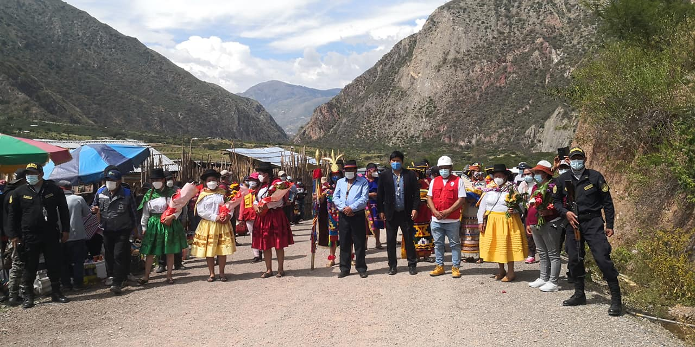
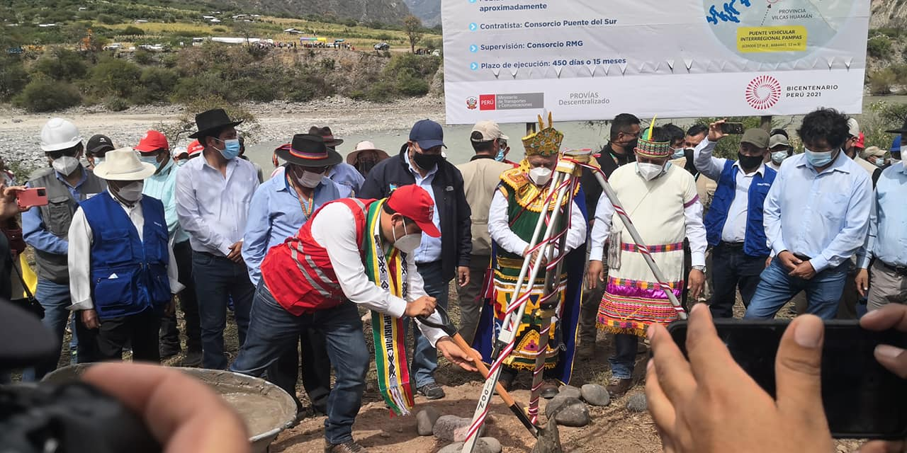
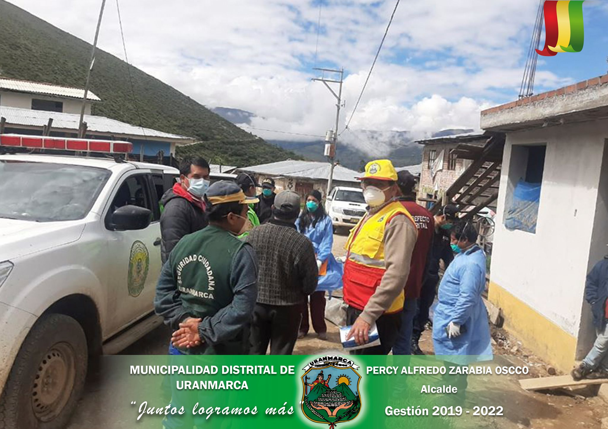
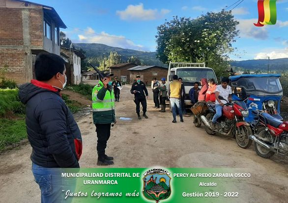
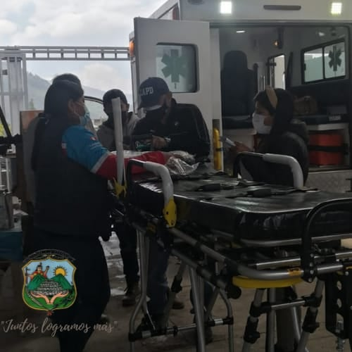
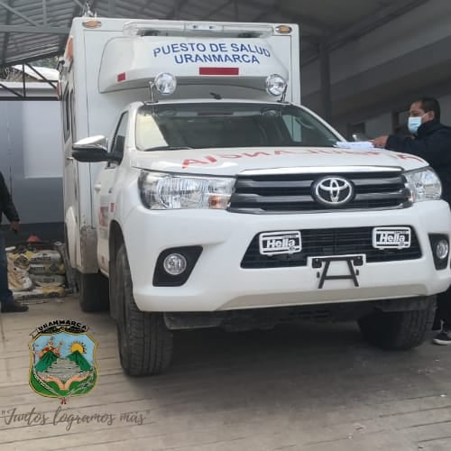
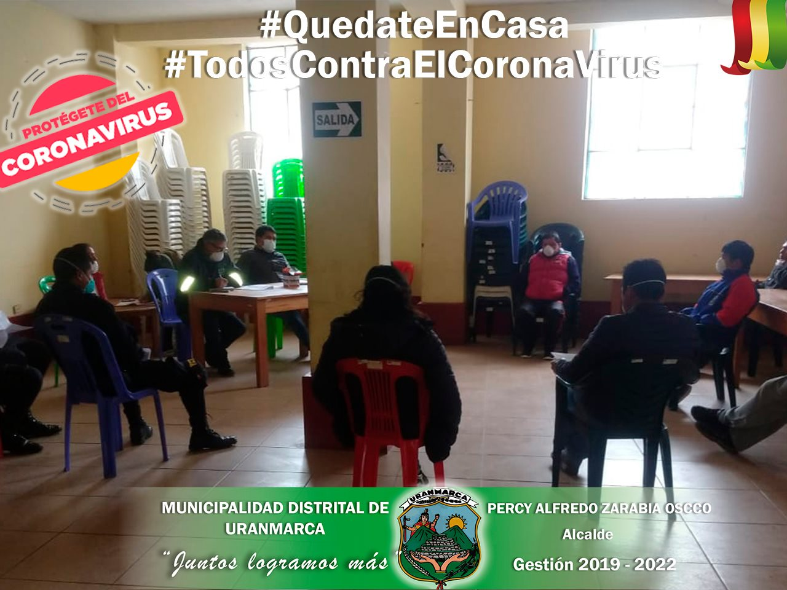

El día de ayer 06 de mayo, se realizó el inicio de obra del "PUENTE VEHICULAR INTERREGIONAL PAMPAS DE LAS VIAS DEPARTAMENTALES AY 105 Y AP 105 EN LAS LOCALIDADES DE INCACHACA Y CHACABAMBA, DISTRITOS DE SAURAMA Y URANMARCA, PROVINCIAS DE VILCASHUAMAN Y CHINCHEROS DE AYACUCHO Y APURIMAC".

Este proyecto es uno de los anhelos que tiene el Distrito de Uranmarca, el cual se va haciendo una realidad, para lo cual felicitamos a las autoridades del Distrito de Uranmarca encabezado por su alcalde el Sr. Percy Alfredo Zarabia Oscco, autoridades de la Provincia de Chincheros y a los residentes Uranmarquinos que vienieron trabajando de forma conjunta para hacer realidad la construcción de este Puente Interregional. En imágenes se muestra la puesta de la primera Piedra llevada a cabo en el lado de INCACHACA distrito de Saurama, con la participación del Ministro de transportes y comunicaciones, el Gobernador regional de Apurímac y Ayacucho, alcaldes provinciales y distritales de ambas regiones, representantes de PROVIAS Nacional y diferentes autoridades. MUNICIPALIDAD DISTRITAL DE URANMARCA "JUNTOS LOGRAMOS MÁS"

LA MUNICIPALIDAD DISTRITAL DE URANMARCA, ENCABEZADO POR EL SEÑOR ALCALDE PERCY ALFREDO ZARABIA OSCCO, SUBPREFECTO, PERSONAL DEL CENTRO DE SALUD Y PNP, PARTICIPARON DE LA SUPERVISIÓN A NIVEL DEL DISTRITO

Con el fin de hacer cumplir las medidas establecidas por el gobierno central, se realizó la supervisión vecinal dentro del distrito y de esta manera evitar la propagación y contagio del covid-19 en nuestro distrito y distritos vecinos. Municipalidad Distrital de Uranmarca "JUNTOS LOGRAMOS MÁS"

El día Martes 20 del presente mes en el PP. SS del Distrito de Uranmarca, se hace la verificación y aprobación de una Ambulancia rural Tipo 1.

Los representantes de la Dirección de salud Virgen de Cocharcas estuvieron presentes en la verificacióny aprobación de una Ambulancia rural Tipo I, para el Proyecto “AMPLIACIÓN Y MEJORAMIENTO DE LOS SERVICIOS DE SALUD EN LOS PUESTOS DE SALUD DE URANMARCA, TANCAYLLO Y HUANCANE, DISTRITO DE URANMARCA - CHINCHEROS - APURÍMAC” CÓD. SNIP 338765.🚑

Bajo la convocatoria del señor alcalde de la Municipalidad Distrital de Uranmarca se desarrolló la reunión multisectorial con la finalidad de Conformar la comisión de identificación y empadronamiento de las personas vulnerables que serán beneficiadas con la canasta básica familiar

Los integrantes de la comisión son:
- Sr. Percy Alfredo Zarabia Oscco – Alcalde.
- Sr. Moises Espinoza Rimachi – Subprefecto del distrito.
- Sr. Segundo Mamamani Callo – Presidente de la Comunidad de Uranmarca.
- Sr. Edgar Garibay Oscco – Juez de Paz.
- Sr. Fredy Alazabal Zamora – Juez de Paz.
- Sr. Nicolas Galindo – Responsable.
- Sr. Juan Sierra Zamora – Regidor.
- Sr. Angel Quijada CCachachi – Regidor.
- Representante de la PNP de Uranmarca.
- Representante del puesto de salud de Uranmarca.
- Srta. Sulma Oscco Guillen – Jefe de abastecimiento de Municipalidad Distrital de Uranmarca.
- Regidor Sr. Angel Quijada Ccachachi
- Sr. Juan Sierra Zamora
- Sr. Segundo Mamamani Callo – Presidente de la Comunidad de Uranmarca.
- Arroz
- Azúcar
- Fideos
- Aceite
- Lenteja
- Leche
- Conservas de pescado
- Avena
- Harina
"JUNTOS LOGRAMOS MÁS"
